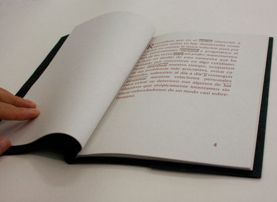

Libro de artista (edición de 3 ejemplares) // 15x22 cms // 92 pg // 2011
Exposición colectiva Mientras quepa en la maleta: LAKKA studioart, México DF, No Automático, Monterrey, Museo del Ámbar, San Cristóbal de las casas.
Burocracia, frontera, distancia. Estas tres palabras y sus correspondientes definiciones estructuran los tres capítulos de la historia, inspirada libremente en los desafortunados acontecimientos que, de modo inesperado, acabaron originando una serie de exposiciones colectivas en varios lugares de México.
La narración se estructura mediante dos niveles: en el primero encontramos la totalidad de la historia, en el segundo percibimos que la definición de estas tres palabras (burocracia, frontera, distancia) se encuentra oculta en cada uno de los capítulos de dicho relato.